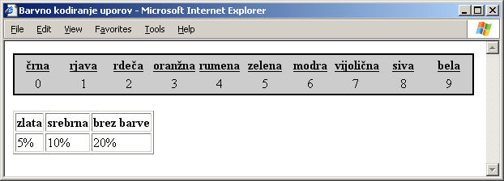

Utrjujemo snov 5. poglavja
Vprašanja z izbiro
- Kateri lastnosti moramo prirediti ime datoteke, ki vsebuje zunanjo slogovno polo, če želimo polo vključiti v dokument?
- Lastnosti href elementa link.
- Lastnosti href elementa body.
- Lastnosti style elementa body.
- Lastnosti style elementa head.
- Kako v slogovnem pravilu pravilno zapišemo, naj se lastnosti font-family priredi vrednost monospace?
- font-family=monospace;
- font-family="monospace";
- font-family:monospace;
- font-family:"monospace";
- Kako v slogovnih polah pišemo opombe?
- Med skupini znakov /* in */
- Med skupini znakov <!-- in -->
- V par zavitih oklepajev.
- V par znakov manjši (<) in večji (>).
- S kakšnim slogovnim pravilom dosežemo, da bo vsebina elementa em podčtrana (angl. underline), vendar le v urejenem seznamu?
- ol, em {text-decoration: underline;}
- ol em {text-decoration: underline;}
- em ol {text-decoration: underline;}
- em, ol {text-decoration: underline;}
- V slogovni poli smo s pravilom em.podcrtan {text-decoration : underline;}
določili nov razred, ki povzroči, da se besedilo prikaže podčrtano (angl. underline). Kateri od naslednjih zapisov bo povzročil, da bo stavek Jaz sem podčrtan. v resnici podčrtan?
- <em class="podcrtan">Jaz sem podčrtan.</em>
- <em.podcrtan>jaz sem podčrtan</em.podcrtan>
- <em style="podcrtan">jaz sem podčrtan</em>
- Noben od naštetih.
- V zunanji slogovni poli imamo pravilo h1 {color:red; text-align:center;},
v notranji poli pa imamo pravilo h1 {color:blue;}. Brskalnik uravnava vsebino elementa h1 ob levi rob (privzeta vrednost). Kako se bo prikazal element h1?
- Modro (angl. blue) in osredinjeno (angl. center).
- Rdece (angl. red) in osredinjeno.
- Modro in levo uravnano.
- Rdeče in levo uravnano.
V razmislek
S pomočjo zunanje slogovne pole oblikujte spletno stran, na kateri bosta dve različno oblikovani tabeli, kakor kaže slika:
